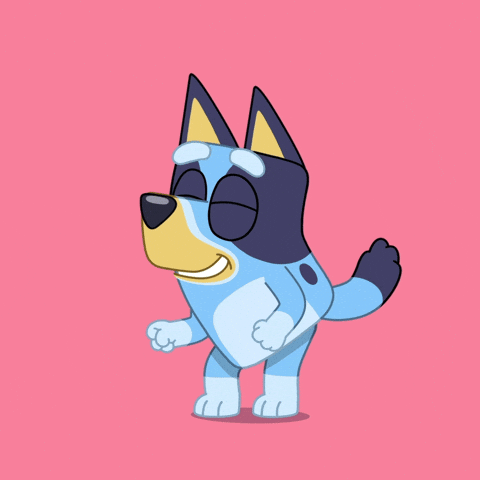
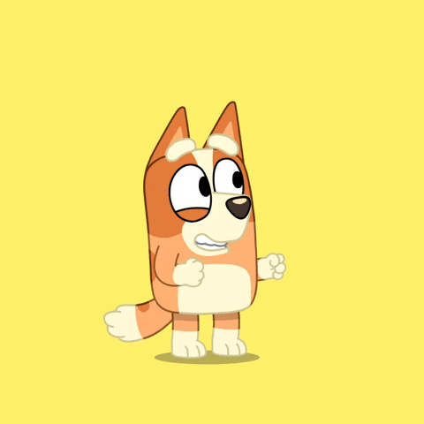
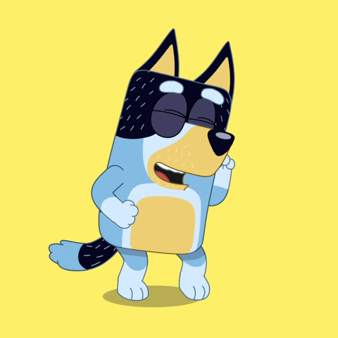
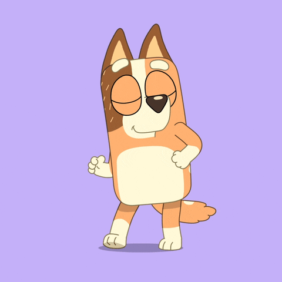

Conoce a la Familia Heeler

Bluey Heeler
Blue es una cachorra de seis años, curiosa y enérgica. Le encanta inventar juegos divertidos e imaginativos, también vivir aventuras con su familia y amigos.

Bingo Heeler
Bingo es la hermana pequeña de Bluey y es una cachorra de cuatro años. Le encanta jugar, inventar nombres divertidos y sumergirse en el momento.

Bandit Heeler
Es el papá de Bluey y Bingo, un arqueólogo al que le encanta jugar con sus hijas y enseñarles lecciones valiosas a través de la diversión.

Chilli Heeler
Es la mamá de Bluey y Bingo. Trabaja en seguridad aeroportuaria, es cariñosa y es muy buena enseñándole a sus hijas sobre el mundo y cómo enfrentar sus desafíos.